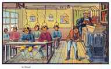

Daryush "Roosh" Valizadeh created ROK in October 2012. You can visit his blog at RooshV.com or follow him on Twitter and Facebook.


Dumbing Us Down by John Gatto is a book that gives you the red pill on modern education and how it is tragically failing those who have to endure it. Since I am a product of the public schools in a predominately Democratic state (Maryland), and received a steroidal dose of liberal brainwashing in university, it’s a small miracle that I was able to fully digest the red pill since the whole point of those who educated me was to keep me ignorant.
School is a twelve-year jail sentence where bad habits are the only curriculum truly learned. I teach school and win awards doing it. I should know.
This book is nothing new to those of you who are already aware of the problems in education, but there are a few key segments that I want to share as Gatto offers his perspective from working as a public school teacher.
The [establishment] ensures a workforce that will not rebel — the greatest fear at the turn of the 20th century — that will be physically, intellectually, and emotionally dependent upon corporate institutions for their incomes, self-esteem, and stimulation, and that will learn to find social meaning in their lives solely in the production and consumption of material goods.
[…]
The schools we’ve allowed to develop can’t work to teach nonmaterial values, the values which give meaning to everyone’s life, rich or poor, because the structure of schooling is held together by a Byzantine tapestry of reward and threat, of carrots and sticks. Official favor, grades, or other trinkets of subordination have no connection with education; they are the paraphernalia of servitude, not of freedom.
To keep people engaged in playing the rat race, you have to give them material rewards as young students, priming them for addiction so that as adults they will eagerly take on debt and other hardships to continue receiving more shiny rewards placed just beyond their reach. Public education teaches children to greatly covet the material through the focus on class status, prizes, and the benefits of having a “good job.” When these children grow up to be adults, their self-esteem is wrapped around the gain of material items, making them obedient and compliant workers for the elite class who happens to control what goes in the school curriculum.
I began to realize that the bells and the confinement, the crazy sequences, the age-segregation, the lack of privacy, the constant surveillance, and all the rest of the national curriculum of schooling were designed exactly as if someone had set out to prevent children from learning how to think and act, to coax them into addiction and dependent behavior.
He makes the analogy that public schools are essentially prisons, but now that schools are doing away with physical education, you actually get less exercise in schools than being locked up in jail.
I’ve come to see that truth and schoolteaching are, at bottom, incompatible, just as Socrates said thousands of years ago.
How much can we blame those on the left, who put their fingers in their ears and scream and yell as you speak the truth, when they are logical products of the education they received? We have to accept that humans were never meant to be self-aware after decades of indoctrination, and that once a mind is lost, it is likely lost forever. Instead of sharing the truth to those who are no longer capable of receiving it, the better option is to neutralize them away from positions of power and influence so that the health of society is not negatively affected.
Lives can be controlled by machine education, but they will always fight back with weapons of social pathology: drugs, violence, self-destruction, indifference, and the symptoms I see in the children I teach.

Forcing students to sit through mind-numbing lessons for hours causes so much inner tension and conflict that the only way they can balance that is to act out in expressions of “freedom” that tend to be destructive and degenerate. This is also commonly seen in children with strict parents who try to control all aspects of their lives.
Adults are also not immune from the balance equation. If you forbid me from having sex, and I am unable to release that tension, I will find another outlet to release the aggression. For example, it’s so common to see fist fights among men at the end of a weekend night in the city because they are frustrated that they could not act on their sex urge. Other outlets for repressed sexual energy include accumulating excess material wealth, using drugs, and joining the cult of social justice.
Networks do great harm by appearing enough like real communities to create expectations that they can manage human social and psychological needs. The reality is that they cannot. Even associations as inherently harmless as bridge clubs, chess clubs, amateur acting groups, or groups of social activists will, if they maintain a pretense of whole friendship, ultimately produce that odd sensation familiar to all city dwellers of being lonely in the middle of a crowd.
The problem with communities is that they only cherish one specific part of us, while ignoring the rest of the whole. In your work network, what will happen if you talk about your thoughts on women? You’ll be fired. In your gym network, what will happen if you talk about the latest philosophy books you’ve read? You’ll be looked upon as too brainy. Loose communities are a poor simulation of friendship, which is more suitable to share the totality of your experience and being.
As we approach the twenty-first century it is correct to say that the United States has become a nation of institutions, whereas it used to be a nation of communities. Large cities have great difficulty supporting healthy community life, partly because of the coming and going of strangers, partly because of space constrictions, partly because of poisoned environments, but mostly because of the constant competition of institutions and networks for the custody of children and old people, for monopolizing the time of everyone else in between. By isolating young and old from the working life of places and by isolating the working population from the lives of young and old, institutions and networks have brought about a fundamental disconnection of the generations.
We’re segmented, we don’t talk to each other, we don’t understand each other. You probably look at someone just five years older or younger than you as belonging to a wholly different generation. Thanks to the internet, we’ve become so used to interacting only with people who have the exact same niche interests as we do that we are losing the ability to talk to those who differ only slightly from us. This artificial tribalism is further amplified in urban environments if people who live in your neighborhood studied at the same liberal schools, consume the same mainstream media, eat the same trendy foods, and work similar types of politically correct jobs.
…every institution’s unstated first goal is to survive and grow, not to undertake the mission it has nominally staked out for itself. Thus the first goal of a government postal service is not to deliver the mail; it is to provide protection for its employees and perhaps a modest status ladder for the more ambitious ones.

This applies to every organization. Whatever their stated goal of helping citizens or providing a service, it is always subservient to the interests of individuals who are a part of the organization. When it comes to organizations related to intelligence or defense of the state, you will find that they may actually work in opposition to the country they’re supposedly in service to.
One of the surest ways to recognize real education is by the fact that it doesn’t cost very much, doesn’t depend on expensive toys or gadgets. The experiences that produce it and the self-awareness that propels it are nearly free. It is hard to turn a dollar on education. But schooling is a wonderful hustle, getting sharper all the time.
How much did it cost you to educate yourself on game, fitness, and politics? You bought a few books, read reams of text on free web pages, and watched some Youtube videos. Compare that to what you paid for during your university education, and what your parents paid in taxes for your public education. These expenses amounted to a colossal waste that can no longer be justified in the internet age where education now merely requires motivation instead of money.
…some disturbing evidence exists that the income of working couples in 1990 has only slightly more purchasing power than the income of the average working man did in 1910. In effect, two laborers are now being purchased for the price of one — an outcome Adam Smith or David Ricardo might have predicted. And an unseen social cost of all of this has been the destruction of family life, the loss of home as sanctuary or haven, and the bewilderment of children who, since infancy, have been raised by strangers.
By pushing wives into work, feminism is a war against the middle class for no gain in household wealth while children can be “educated” in Marxist and far-left thought. The elite pocket all the monetary gains from having an increase supply of cheaper labor at the same time they successfully put a wedge between men and women, who are now forced to compete against each other for resources instead of bonding together to create a strong institution of family that can resist negative governmental influence. All the while, children suffer because they are educated to be weak, ignorant, and dependent on the system for the entirety of their lives.
…people are less than whole unless they gather themselves voluntarily into groups of souls in harmony. Gathering themselves to pursue individual, family, and community dreams consistent with their private humanity is what makes them whole; only slaves are gathered by others.
And that’s why the community we have here, especially at Roosh V Forum, is so powerful, because it was self-organized based not only on mutual interests, but also the values of how a society should be, and through that community we educate each other in a more profound way than what we experienced in the schooling system.
If I ever have a son, I will either home school him or find a specific school that is not intent on brainwashing him to be another beta male slave in the machine. Because leftists have unsustainable birth rates, the only way they are able to further their movement is to capture the children of those on the right. It makes no sense for me to feed my children through their machine, for them to score another convert to their sick cult.
While Gatto’s book focuses more on education, it’s essentially an introduction to the red pill by showing us how we can relay the truth to the next generation so they are more sane and fulfilled. I strongly recommend it, especially to those who plan on having children or who already have them.
This article was originally published on Roosh V.
Read More: “Dumbing Us Down” on Amazon